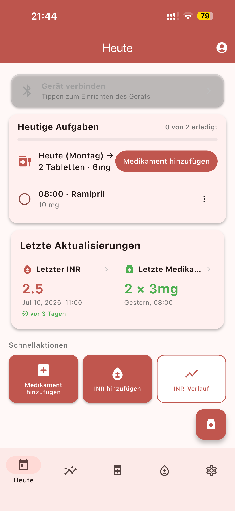
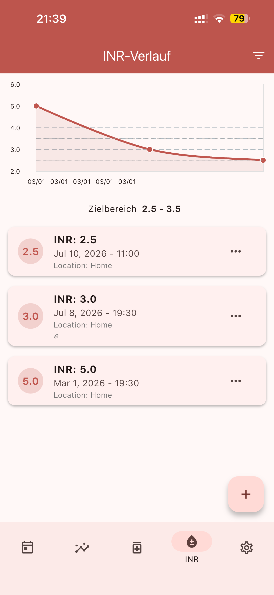
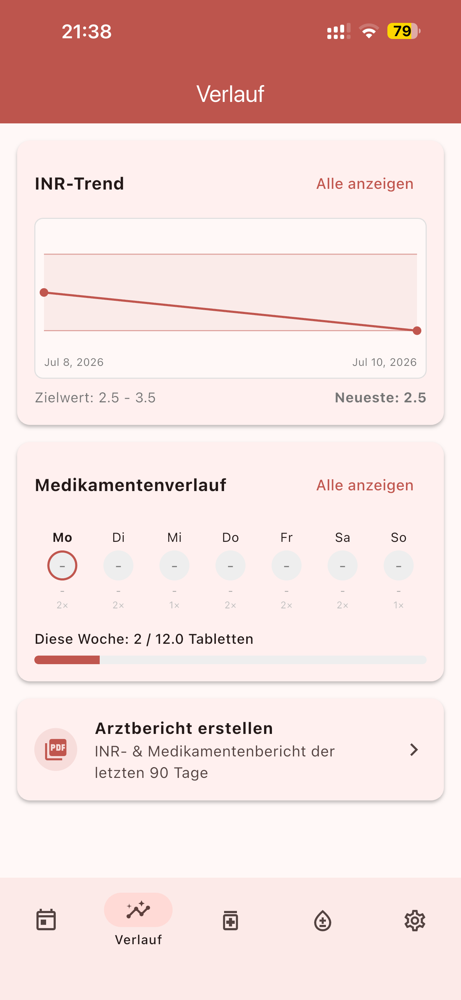
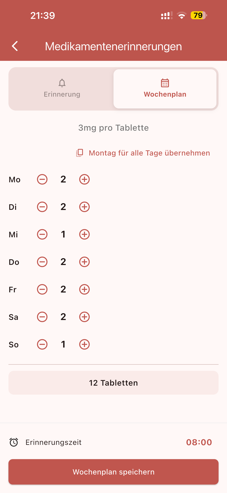
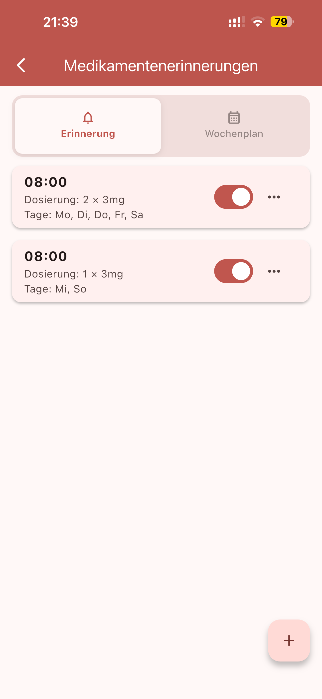

Erinnerungen, auf die Verlass ist
Nie wieder eine Einnahme vergessen: Medinote erinnert Sie pünktlich per Push-Benachrichtigung – und mit einem Tipp markieren Sie die Einnahme direkt als „Eingenommen“ oder „Nicht eingenommen“.
Pilotphase in Deutschland – jetzt mittesten
Medinote begleitet Menschen unter Antikoagulations-Therapie – z. B. mit Marcumar, Falithrom oder Warfarin. Mit Wochenplan und zuverlässigen Erinnerungen behalten Sie Ihre Einnahmen im Griff, Ihre INR-Werte übernimmt die App auf Wunsch automatisch vom microINR®-Messgerät. Und das Beste: Sie brauchen kein Konto – alle Daten bleiben auf Ihrem Telefon.

Entwickelt für den Alltag mit Gerinnungshemmern: übersichtlich, gut lesbar und einfach zu bedienen.
Nie wieder eine Einnahme vergessen: Medinote erinnert Sie pünktlich per Push-Benachrichtigung – und mit einem Tipp markieren Sie die Einnahme direkt als „Eingenommen“ oder „Nicht eingenommen“.
Welche Tablette an welchem Tag? Der Wochenplan zeigt Ihre Dosierung für jeden Wochentag – klar und übersichtlich, genau wie auf dem Dosierungsplan Ihrer Ärztin oder Ihres Arztes.
Einmal per Bluetooth verbinden – fertig. Ihre Messwerte überträgt das microINR®-Messgerät automatisch in die App: ohne Abtippen, ohne Zahlendreher, ohne Aufwand.
Erfassen Sie Ihre INR-Werte und sehen Sie den Verlauf als Diagramm. Medinote zeigt sofort, ob ein Wert in Ihrem persönlichen Zielbereich liegt (z. B. 2,0–3,0).
Marcumar/Falithrom, Warfarin, Acenocoumarol und weitere Medikamente mit einem Tipp protokollieren – Ihr vollständiger Einnahmeverlauf, jederzeit griffbereit beim Arztbesuch.
Medinote funktioniert ganz ohne Konto und ohne Registrierung: Alle Daten werden ausschließlich auf Ihrem Telefon gespeichert. Ein Konto erstellen Sie nur, wenn Sie es möchten.
Klare Oberfläche, große Schrift, hoher Kontrast – gestaltet für den täglichen Gebrauch.




In drei Schritten zu einem verlässlichen Überblick über Ihre Therapie.
App öffnen und direkt starten, ganz ohne Registrierung. Antikoagulans auswählen, INR-Zielbereich nach ärztlicher Vorgabe festlegen und Wochenplan anlegen – fertig.
Einnahmen mit einem Tipp dokumentieren – die Erinnerung meldet sich von selbst. INR-Werte übernimmt die App automatisch per Bluetooth vom microINR®-Messgerät.
Trends verfolgen, den Verlauf beim Arztbesuch zeigen und Ihre Daten jederzeit als Datei exportieren. Alles bleibt dabei auf Ihrem Telefon.
Hinweis: Medinote ist ein Werkzeug zur Dokumentation und ersetzt keine ärztliche Beratung. Entscheidungen über Ihre Dosierung treffen Sie immer gemeinsam mit Ihrer Ärztin oder Ihrem Arzt.
Gesundheitsdaten sind besonders sensibel. Deshalb gilt bei Medinote: Alles bleibt auf Ihrem Telefon – ein Konto ist freiwillig. Entwickelt von Anfang an nach den Vorgaben der DSGVO.
Nutzen Sie Medinote sofort und ohne Registrierung. Ihre Gesundheitsdaten – INR-Werte und Medikationseinträge – werden ausschließlich lokal auf Ihrem Telefon gespeichert.
Ein Konto ist optional. Wenn Sie eines erstellen, werden Ihre Daten verschlüsselt übertragen – und nur mit Ihrer ausdrücklichen Einwilligung verarbeitet (DSGVO Art. 6 und 9), jederzeit widerrufbar.
Sie können Ihre Daten jederzeit in der App exportieren und vollständig löschen – auf Wunsch samt Konto, ohne Rückfragen.
Medinote zeigt keine Werbung und verkauft keine Daten. Wir erheben nur, was für die Funktion der App notwendig ist.
Medinote befindet sich derzeit in der Pilotphase in Deutschland. Werden Sie Teil des Testprogramms und gestalten Sie die App mit Ihrem Feedback mit.
kontakt@medi-note.de